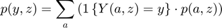
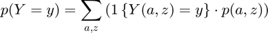

Compute Probability Mass for Outcome based on Mass of States
back to Fan's Dynamic Assets Repository Table of Content.
Contents
function [tb_choice_drv_cur_byY, ar_choice_prob_byY, ar_choice_unique_sorted_byY, mt_choice_prob_byYZ] ... = fft_disc_rand_var_mass2outcomes(varargin)
FFT_DISC_RAND_VAR_MASS2OUTCOMES find f(y) based on f(a,z), and y(a,z)
Having derived f(a,z) the probability mass function of the joint discrete random variables, we now obtain distributional statistics. Note that we know f(a,z), and we also know relevant policy functions a'(a,z), c(a,z), or other policy functions. We can simulate any choices that are a function of the random variables (a,z), using f(a,z).
The procedure here has these steps:
- Sort [c(a,z), f(a,z)] by c(a,z)
- Generate unique IDs of sorted c(a,z): unique
- sum(f(a,z)|c) for each unique c(a,z): accumarray, this generates f(c)
- calculate statistics based on f(c), the discrete distribution of c.
Outputs are:
- unique sorted outcomes, note different (a,z) can generate the same outcomes and not in order
- find total probabiliy for p(outcome, z) = sum_{a}( 1{outcome(a)==outcome}*f(a,z))

- find total probabiliy for p(outcome) = sum_{a,z}( 1{outcome(a,z)==outcome}*f(a,z) )

@param st_var_name string name of the variable (choice/outcome) been analyzed
@param mt_choice_bystates matrix N by M of choices along two dimensions, N could be endogenous states, M could be exogenous shocks, or vice-versa
@param mt_dist_bystates matrix N by M of probability mass on states, N could be endogenous states, M could be exogenous shocks, or vice versa
@return tb_choice_drv_cur_byY table table containing two columns, unique outcomes/choices y from y(a,z) and probability mass associated with each y f(y)
@return ar_choice_prob_byY table array probability mass associated with each y f(y), second column from tb_choice_drv_cur_byY, dimension unknown, determined by y(a,z) function
@return ar_choice_unique_sorted_byY table array unique Ys, dimension unknown, determined by y(a,z) function
@return mt_choice_prob_byYZ matrix f(y,z), meaning for y outcomes along the column dimension.
@return mt_choice_prob_byYA matrix f(y,a), meaning for y outcomes along the row dimension.
Default
use binomial as test case, z maps to binomial win prob, remember binom approximates normal.
params_len = length(varargin); bl_input_override = 0; if (params_len == 4) bl_input_override = varargin{4}; end if (bl_input_override) % if invoked from outside overrid fully [st_var_name, mt_choice_bystates, mt_dist_bystates, ~] = varargin{:}; bl_display_drvm2outcomes = false; else clear all; close all; it_states = 6; it_shocks = 5; fl_binom_n = it_states-1; ar_binom_p = (1:(it_shocks))./(it_shocks+2); ar_binom_x = 0:1:(it_states-1); % a ar_choice_unique_sorted_byY = ar_binom_x; % f(z) ar_binom_p_prob = binopdf(0:(it_shocks-1), it_shocks-1, 0.5); % f(a,z), mass for a, z mt_dist_bystates = zeros([it_states, it_shocks]); for it_z=1:it_shocks % f(a|z) f_a_condi_z = binopdf(ar_binom_x, fl_binom_n, ar_binom_p(it_z)); % f(z) f_z = ar_binom_p_prob(it_z); % f(a,z)=f(a|z)*f(z) mt_dist_bystates(:, it_z) = f_a_condi_z*f_z; end % y(a,z), some non-smooth structure mt_choice_bystates = ar_binom_x' - 0.01*ar_binom_x'.^2 + ar_binom_p - 0.5*ar_binom_p.^2 + rand([it_states, it_shocks]); mt_choice_bystates = round(mt_choice_bystates*2); % display st_var_name = 'binomtest'; % display bl_display_drvm2outcomes = true; end
Generate Y(a) and Y(a,z)
1. Get Choice Matrix (choice or outcomes given choices) see end of ff_az_vf_vecsv outcomes in result_map are cells with two elements, first element is y(a,z), second element will be f(y) and y, generated here.
ar_choice_cur_bystates = mt_choice_bystates(:); % 2. Sort and Generate Unique ar_choice_bystates_sorted = sort(ar_choice_cur_bystates); ar_choice_unique_sorted_byY = unique(ar_choice_bystates_sorted); % 3. Sum up Density at each element of ar_choice ar_choice_prob_byY = zeros([length(ar_choice_unique_sorted_byY),1]); mt_choice_prob_byYZ = zeros([length(ar_choice_unique_sorted_byY), size(mt_dist_bystates,2)]); mt_choice_prob_byYA = zeros([length(ar_choice_unique_sorted_byY), size(mt_dist_bystates,1)]); for it_z_i = 1:size(mt_dist_bystates,2) for it_a_j = 1:size(mt_dist_bystates,1) % get f(a,z) and c(a,z) fl_mass_curstate = mt_dist_bystates(it_a_j, it_z_i); fl_choice_cur = mt_choice_bystates(it_a_j, it_z_i); % add f(a,z) to f(c(a,z)) ar_choice_in_unique_idx = (ar_choice_unique_sorted_byY == fl_choice_cur); % add probability to p(y) ar_choice_prob_byY(ar_choice_in_unique_idx) = ar_choice_prob_byY(ar_choice_in_unique_idx) + fl_mass_curstate; % add probability to p(y,z) mt_choice_prob_byYZ(ar_choice_in_unique_idx, it_z_i) = mt_choice_prob_byYZ(ar_choice_in_unique_idx, it_z_i) + fl_mass_curstate; % add probability to p(y,a) mt_choice_prob_byYA(ar_choice_in_unique_idx, it_a_j) = mt_choice_prob_byYA(ar_choice_in_unique_idx, it_a_j) + fl_mass_curstate; end end % 4. Store into second cell of the outcome's key's value in results_map % drv: discrete random variable tb_choice_drv_cur_byY = array2table([ar_choice_unique_sorted_byY ar_choice_prob_byY]); tb_choice_drv_cur_byY.Properties.VariableNames = matlab.lang.makeValidName([string([char(st_var_name) ' outcomes']), 'prob mass function']);
Display
if (bl_display_drvm2outcomes) disp('INPUT f(a,z): mt_dist_bystates'); disp(mt_dist_bystates); disp('INPUT y(a,z): mt_choice_bystates'); disp(mt_choice_bystates); disp('OUTPUT f(y): ar_choice_prob_byY'); disp(ar_choice_prob_byY); disp('OUTPUT f(y,z): mt_choice_prob_byYZ'); disp(mt_choice_prob_byYZ); disp('OUTPUT f(y,a): mt_choice_prob_byYA'); disp(mt_choice_prob_byYA); disp('OUTPUT f(y) and y in table: tb_choice_drv_cur_byY'); disp(tb_choice_drv_cur_byY); end
INPUT f(a,z): mt_dist_bystates
0.0289 0.0465 0.0228 0.0036 0.0001
0.0241 0.0930 0.0857 0.0241 0.0015
0.0080 0.0744 0.1285 0.0643 0.0074
0.0013 0.0297 0.0964 0.0857 0.0186
0.0001 0.0059 0.0361 0.0571 0.0232
0.0000 0.0005 0.0054 0.0152 0.0116
INPUT y(a,z): mt_choice_bystates
0 1 2 2 3
4 4 4 3 4
6 5 6 5 6
8 8 8 8 8
8 8 10 9 10
10 11 11 11 12
OUTPUT f(y): ar_choice_prob_byY
0.0289
0.0465
0.0265
0.0242
0.2042
0.1386
0.1440
0.2378
0.0571
0.0594
0.0211
0.0116
OUTPUT f(y,z): mt_choice_prob_byYZ
0.0289 0 0 0 0
0 0.0465 0 0 0
0 0 0.0228 0.0036 0
0 0 0 0.0241 0.0001
0.0241 0.0930 0.0857 0 0.0015
0 0.0744 0 0.0643 0
0.0080 0 0.1285 0 0.0074
0.0015 0.0357 0.0964 0.0857 0.0186
0 0 0 0.0571 0
0.0000 0 0.0361 0 0.0232
0 0.0005 0.0054 0.0152 0
0 0 0 0 0.0116
OUTPUT f(y,a): mt_choice_prob_byYA
0.0289 0 0 0 0 0
0.0465 0 0 0 0 0
0.0265 0 0 0 0 0
0.0001 0.0241 0 0 0 0
0 0.2042 0 0 0 0
0 0 0.1386 0 0 0
0 0 0.1440 0 0 0
0 0 0 0.2317 0.0061 0
0 0 0 0 0.0571 0
0 0 0 0 0.0594 0.0000
0 0 0 0 0 0.0211
0 0 0 0 0 0.0116
OUTPUT f(y) and y in table: tb_choice_drv_cur_byY
binomtestOutcomes probMassFunction
_________________ ________________
0 0.028917
1 0.046484
2 0.026462
3 0.024216
4 0.20423
5 0.13863
6 0.14399
8 0.23781
9 0.057119
10 0.059391
11 0.02113
12 0.011621
end
ans =
12×2 table
binomtestOutcomes probMassFunction
_________________ ________________
0 0.028917
1 0.046484
2 0.026462
3 0.024216
4 0.20423
5 0.13863
6 0.14399
8 0.23781
9 0.057119
10 0.059391
11 0.02113
12 0.011621